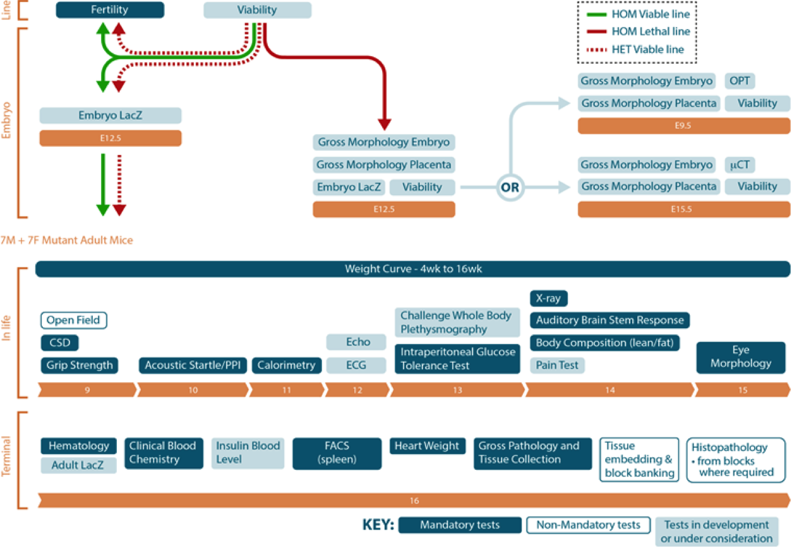

IMPC images page documentation
Image details
- How do I search images associated with my favourite gene or phenotype?
- The IMPC portal offers images that are annotated with Mouse Annatomy (MA) and Mammalian Phenotype (MP) terms. To search for images associated with for example Akt2 type Akt2 into the search box at the top of the page and then click on the images link at the side.
A list with categories of images associated to the Akt2 is then displayed on the left, click on these categories to see sub categories and their respective counts of images associated with that category. You can also search for genes using MGI identifiers. To search for Anatomys you can use Click here to find out more about where the images are from and how they are annotated
- Images
- The IMPC portal offers images that are annotated with Mouse Annatomy (MA) and Mammalian Phenotype (MP) terms. Currently images and their annotations are from legacy data from the MGP project at the Wellcome Trust Sanger Institute Find out more
however in the future the portal will also contain images from the IMPC standardised screens https://www.mousephenotype.org/impress

- get a list of genotypes associated to a specific phenotype.
- retrieve X-ray, expression images.